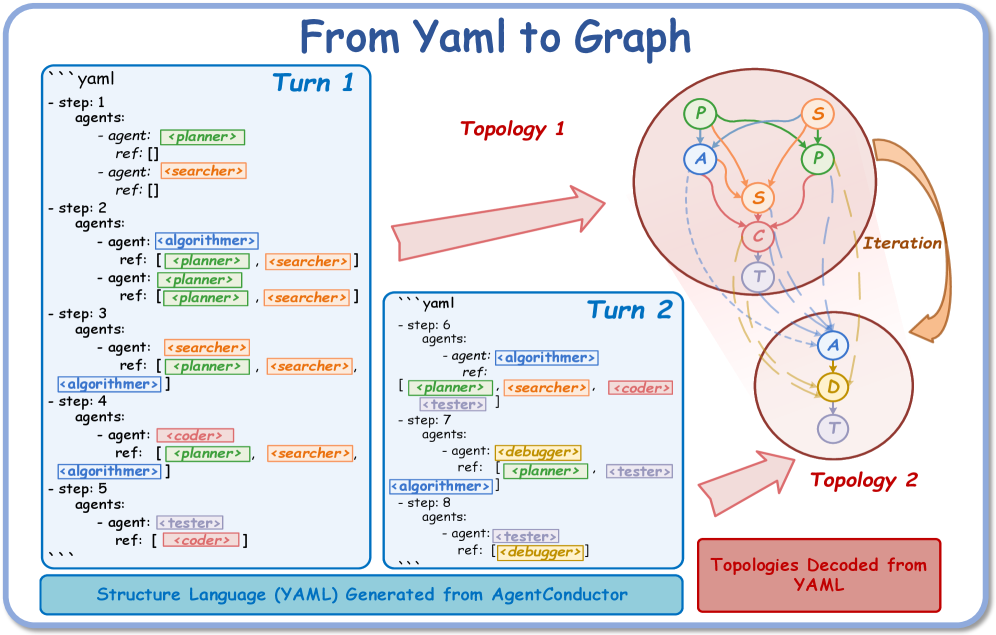
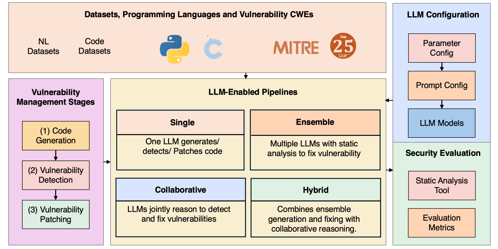

1Adaptive topology

选对协作结构
先按任务生成角色与连接关系，而非固定一套“开会模板”。
从“多开几个 Agent”退一步：先看协作究竟提供了什么单 Agent 没有的东西。



先按任务生成角色与连接关系，而非固定一套“开会模板”。
独立 worktree 中实现与自测，再通过 commit、merge、test 汇合。

不同模型负责生成与审查，静态分析器提供模型之外的证据。


至少命中下面一项；命中越少，越应该先用一个更强的 Agent。
把 Multi-Agent 当作分布式系统，
而不是多人聊天室。